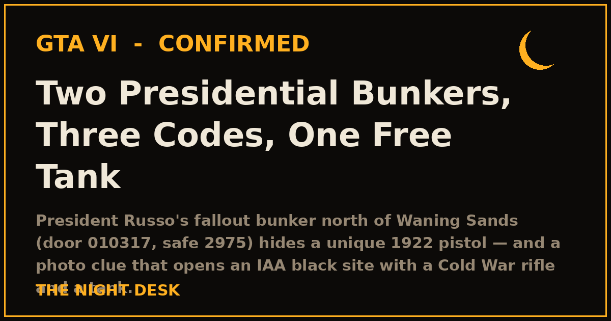

November 21, 2026 · 3 min read
GTA VI's President Has Two Secret Bunkers — and Both Are Stuffed With Legendary Loot

Headline card by The Night Desk
GTA VI's President Has Two Secret Bunkers — and Both Are Stuffed With Legendary Loot
Every GTA hides something presidential-grade absurd somewhere on the map. GTA VI hid two of them, chained together by a photograph — and as of this morning, both are solved, codes and all.
This one is confirmed: GameRant's guides team published the full route firsthand today (Nov. 21), and an independent solve video walks the same bunkers with the same keypad codes. The first bunker's location was even pre-mapped by the community's mapping projects, which had it pegged to the island modeled on Florida's real Peanut Island Kennedy bunker.
The lead. Start at the Friends of Freedom landmark on Catalan Blvd in eastern Downtown Vice City. Talk to the veteran at the wall and ask what really happened. He gives his name — Jose Bermudez — and sends you to Little Cuba, NW 4th Avenue, the salmon-colored building with Cuban flags. Inside his apartment: a fallout-shelter blueprint, a recording that plays secret codes off a radio, and a wall photo marked "Sharktooth Island." Note the date on it.
Bunker one. The President's Bunker sits on an island just north of Waning Sands. The door code is 010317. Run the tunnel, flip the power, and on the table inside sits the strangest piece of set dressing in the game so far: a photograph of the president meeting an alien on Mount Chiliad in 1962 — the Chiliad mystery, acknowledged in-universe, sixty years deep.
The safe. Sit at the president's desk and use the drawer phone; a radio wakes up in the other room talking about Protocol #2. The classified document in the desk gives Protocol #2 as 2341 — reorder the radio's digits into that sequence and the safe code is 2975. Inside: Russo's 1922 Pistol, a unique one-of-one, and a photograph of a second location. Flip the photo over. One word: "OBSESS" — which on a keypad is 085355.
Bunker two. South of the Ammu-Nation on the highway in southern North Mariana County sits a locked bunker — ignore the door. The real way in is a ground hatch, keypad on a tree, code 085355. Below is an IAA Black Site: flashlight out, power on at the far left, follow the beeping to a second recording, then crouch into the control room and hit the button. The main hangar holds the Cold War 556 Assault Rifle and a Hauners Ridgway tank that GameRant reports is yours to keep.
Two bunkers, three codes, a pistol with a president's name on it, and a photograph that quietly ties the whole chain to the oldest mystery in the series. The Night Desk is tracking GTA VI's secrets as they verify — this one verified fast. Bring a flashlight.
Source: GameRant, "How to Open the Mysterious Bunker in GTA 6 — Where to Find the President's Bunkers (All Code Solutions)" (Nov. 21, 2026); independent YouTube solve video, "GTA 6 SECRET BUNKER MYSTERY SOLVED DOORS OPENED!"; community mapping records for the Presidential Bunker landmark. This is guide and community intel collected by The Night Desk — not our own gameplay or discovery.
Source: GameRant (Nov. 2026)
← Back to latest stories